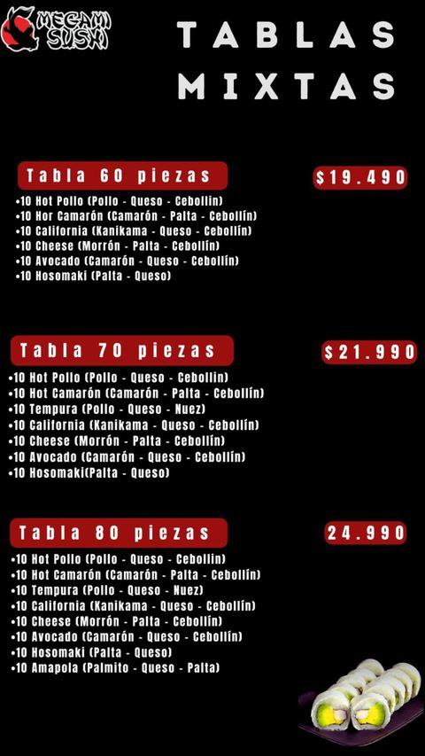
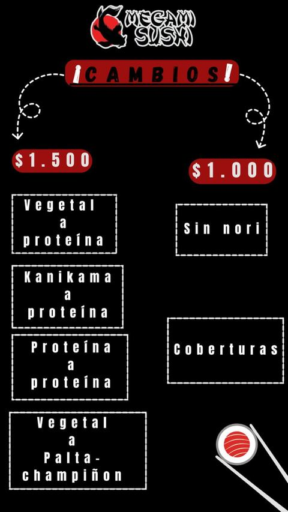
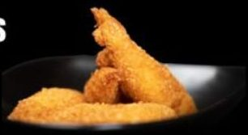
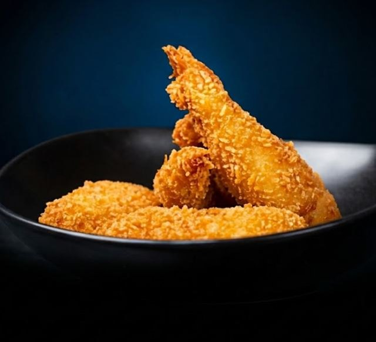

Antes de mirar
Qué es esta demo, y qué no es
Sirve para probar cómo se pide
El objetivo es probar la funcionalidad desde el punto de vista del cliente: cómo encuentra la carta, arma su pedido y lo envía, y cómo eso cambiaría los pedidos y las ventas del local.
El diseño visual viene al final
Fuentes, colores y estilo se eligen en la etapa de diseño, al cierre. Por ahora usamos un diseño más genérico para que lo importante se vea claro: la experiencia del cliente y del restaurante.
Todo se puede cambiar
En la etapa de diseño se ajusta lo que quieras: textos, frases, orden de las secciones, paneles, fotos y colores. Nada de lo que ves está cerrado.
Lo que encontramos
Dónde se pierde hoy un pedido
Revisamos la destacada "Carta" de Instagram, el catálogo de WhatsApp Business, las promos recientes y las 22 opiniones de TripAdvisor.
La carta está repartida en 15 historias
Para comparar dos tablas hay que ir y volver entre imágenes. El catálogo de WhatsApp solo abre dentro de la app.
Los cambios generan roces
La lámina de cambios no dice que valen en las tablas ni cómo se cobran varios cambios. La única opinión negativa en TripAdvisor (2022) es justamente por un cobro de cambios.
Pocos saben que el kanikama se puede cambiar
Quien no quiere kanikama descarta la tabla completa, cuando podría pedirla con otra proteína.
El despacho no se explica en ninguna parte
El cliente no sabe si cuesta, cuánto ni de qué depende hasta que pregunta por chat.
Cada pedido es una conversación larga
Precios, sabores, cambios, dirección y total se resuelven mensaje a mensaje, en horario punta.
Datos que no calzan
Una lámina dice Av. Ecuador 35 y el perfil Av. Alemania #6762. La tabla de 70 aparece a $21.490 en la promo y a $21.990 en la carta. Las láminas son de septiembre de 2024.
Lo que hicimos
Siete mejoras concretas en la landing
Todo lo que ves en la landing usa la carta real de Megami. No hay precios ni productos inventados.
1 · Carta
Toda la carta en una página que se recorre con el pulgar
Transcribimos las 15 láminas, una por una, a una carta con barra de categorías fija: tablas, rolls especiales, handrolls, gohan, sushi burger, para picar y toppings.
- Las tablas se comparan lado a lado: piezas, rolls que trae cada una y precio.
- Mixtas, hot y veggie/vegan en pestañas, sin bajar por historias.
- Texto legible en celular: sin letras espaciadas ni mayúsculas sostenidas.
- Corregimos erratas de las láminas ("Hor camarón", "Envuto").

- 10Hot pollo pollo, queso, cebollín
- 10Hot camarón camarón, palta, cebollín
- 10California kani kanikama, queso, cebollín
- 10Cheese morrón, palta, cebollín
- 10Avocado camarón, queso, cebollín
- 10Hosomaki palta, queso
2 · Lógica de pedido
El pedido se arma solo y llega completo por WhatsApp
Cada plato tiene un botón para agregarlo. El cliente ve su pedido, ajusta cantidades, agrega cambios y elige retiro o delivery. Al final se abre WhatsApp con el pedido ya escrito.
- Arma tu roll paso a paso: cobertura, base y dos ingredientes. No deja avanzar si falta algo.
- El precio se calcula en vivo, incluidas coberturas especiales a precio fijo y toppings.
- Rolls sin arroz con su propia regla: dos bases y dos ingredientes a $6.490.
- El local recibe un mensaje ordenado, con total, entrega, nombre y nota.
Mensaje que recibe el local
3 · Cambios
Cambios claros, con precio, también en tablas y promos
La regla de cambios ahora está escrita en una tabla simple y se aplica desde el mismo pedido, así el cliente sabe cuánto suma antes de enviar. Esto apunta directo a la queja que hoy aparece en TripAdvisor.
- +$1.500: vegetal, kanikama u otra proteína a proteína; vegetal a palta o champiñón.
- +$1.000: sin nori o cambio de cobertura.
- Sin costo: un vegetal por otro.
- Cada tabla y promo con kanikama trae un selector para cambiarlo por otra proteína.

4 · Propuesta comercial
Tablas sin kanikama, al mismo precio
Hay clientes que evitan el kanikama y por eso no piden tabla. Proponemos que en todas las tablas y promos puedan elegir pollo en su lugar sin pagar más. En la landing está como un botón de prueba, marcado como propuesta, para que lo veas funcionando antes de decidir.
- Quita una razón para no comprar la tabla, que es el producto de mayor ticket.
- En la carta actual, la base de pollo teriyaki cuesta $500 más que la de kanikama: una diferencia acotada.
- Mejora la percepción de calidad sin tocar el precio de lista.
5 · Despacho
El despacho explicado antes de pedir
Agregamos una sección que deja claro que el retiro es gratis, que el delivery se cobra aparte según el sector y que el valor se confirma por WhatsApp junto con el total. El pedido muestra "despacho aparte" en todo momento.
- Menos preguntas repetidas por chat.
- Listo para mostrar una tabla de tarifas por sector cuando el local la defina.
6 · Imagen
Las fotos que ya existían, con retoques
Para esta propuesta usamos las fotos que ya estaban en las láminas. Las recortamos, las integramos sobre el fondo negro de la marca para que no se vean cuadros, y al roll principal le quitamos el fondo para ponerlo sobre el sol rojo del koi.
- Paleta tomada del logo: negro, rojo laca y blanco arroz.
- Tipografía de cartel japonés para títulos y precios, y una de lectura para el resto.
- El siguiente nivel: retomar las fotos del producto real, con mejor encuadre, luz y fondo, y tratarlas con IA para que cada plato se vea profesional y apetitoso.

6 · Imagen, para picar
Korokes y furay, con foto nueva
Las fotos anteriores venían recortadas de las láminas. Para estos dos platos hicimos una sesión nueva: el plato completo, con fondo oscuro para que se integre con el de la landing.



7 · Registro de pedidos
Cada pedido queda registrado, aunque se pierda el chat
Hoy el único respaldo de un pedido es la conversación de WhatsApp, y alguien tiene que revisarlas una por una. Con la landing, cada pedido que el cliente envía queda guardado con la hora, sus datos, lo que pidió y el mensaje exacto. El local los ve todos juntos en un panel interno.
- Lista de pedidos del más nuevo al más antiguo, con búsqueda y filtro por fecha.
- Total del día y ticket promedio, separando los pedidos de prueba.
- Si el cliente se queda sin internet, el pedido se guarda igual apenas vuelve la conexión.
- Acceso solo para el personal del local, con usuario y contraseña.
Mejoras visuales
Cómo se ve antes y ahora, en ejemplos
Maquetas de ejemplo para comparar. No son capturas del sitio en producción.
A · Cantidades
Ver cuántos llevas sin recordarlo
Antes el + sumaba sin mostrar cuánto llevabas. Ahora el número aparece junto al botón, y el − se vuelve basurero al quedar uno.
B · Cambios
Perfecto o Modificar, y el ✓ por unidad
Las opciones aparecen solo al tocar Modificar. En productos con varias unidades, cada una se aprueba con su ✓ y el botón de abajo agrega todo.
- Sin vienesa ?
- Sin tomate ?
- Sin palta ?
- Sin mayo ?
C · Para picar
Precios y botones alineados entre tarjetas
Antes el selector de sabor cambiaba de ancho según el texto, y el precio y el + quedaban desalineados. Ahora todos miden lo mismo.
Pedir sin fricción
Mejoras en la experiencia del usuario al pedir
Pedir sushi no debería sentirse como llenar un formulario. Rediseñamos el momento de elegir para que el cliente vea qué lleva cada cosa, cuánto cuesta cada cambio y a cuál va, sin escribirlo ni acordarse después.
- Tocas +Ves qué lleva cada completo, ahí mismo en la tarjeta.
- Modificas solo el que quieresLas opciones aparecen al tocar Modificar, en el completo exacto.
- El cambio y su precio quedan a la vista«Quedará: sin tomate» y el total se actualiza al instante.
- Apruebas con «¡Así lo quiero!»Nada queda a medio elegir. El carrito solo sirve para revisar.
La animación es una maqueta de ejemplo, no una captura del sitio en producción.
El cambio va al producto exacto
Antes un cambio se aplicaba a toda la promo. Ahora el cliente elige en qué completo, roll o empanada va cada uno, y el local recibe el pedido sin dudas sobre cuál era.
Precio claro, cambio por cambio
Cada modificación muestra cuánto vale y se calcula por separado, incluso dentro de una promo. El total se actualiza mientras el cliente elige, sin sorpresas al final.
Dos toques si no cambia nada
«Perfecto» agrega el producto tal como viene. Las opciones quedan ocultas hasta que el cliente toca «Modificar», así pedir lo de siempre es rápido.
Nada se olvida ni queda a medias
El check obliga a aprobar lo que se modificó, y la tarjeta avisa si falta. El cliente no pide primero y recuerda después que quería quitar algo.
Claridad en cada cambio
Cada cambio se aprueba y queda a nombre de un producto
Cuando el cliente termina de resolver cada plato, el sistema hace dos cosas: lo acompaña en sus cambios, pidiéndole su visto bueno, y deja marcado en qué producto exacto va cada uno.
A · Pide el visto bueno
Acompaña y exige la aprobación, con claridad
El cliente puede combinar varios cambios en un mismo plato. Cuando modifica algo, el botón cambia de «Perfecto» a «¡Así lo quiero!», y el ✓ del producto late hasta que lo aprueba. Si intenta seguir sin hacerlo, la tarjeta tiembla y se lo recuerda.
Maqueta de ejemplo, no una captura del sitio.
B · Deja marcado cuál es cuál
El cliente y el local ven exactamente a qué producto va cada cambio
Incluso en una tabla de 70 piezas, el pedido dice cuál de los siete rolls lleva el acevichado. En un 2x1, cuál de los dos completos va sin tomate. El local lo lee igual que el cliente lo eligió.
- Hot pollo
- Hot camarón
- Tempura + acevichado
- California kani
- Cheese
- Avocado
- Hosomaki
1× Tabla 70 piezas mixtas: $25.480
· Tempura: topping acevichado (+$3.490)
1× Promo 2x1 completos: $4.000
· Completo 2: sin tomate
Maqueta de ejemplo, no una captura del sitio.
El carrito como momento de validar
Primero se revisa, después se completa, y recién ahí se envía
El carrito deja de ser una lista de compras. Pasa a ser el momento de validar el pedido, de resolver todo lo que falta y, también, de tentarse.
1 · Validar
Un resumen detallado de lo que eligió, con cada modificación y su costo. Si algo no le gusta, vuelve a editarlo las veces que necesite, sin escribirle a nadie y sin quitarle tiempo a quien atiende el WhatsApp.
2 · Completar
Es el momento de decir cuántos palitos, si quiere wasabi, ketchup para el completo, o un topping adicional y en qué roll.
3 · Tentarse
También es el momento de sumar bebestibles, samplers para compartir, ceviches y entradas. Y de recordarle lo que no ha agregado: acevichar uno de sus rolls, la bebida o algo dulce para cerrar. Es la misma lógica que funciona en la fila del supermercado y en las apps de delivery: una sugerencia justo antes de pagar.
Maqueta de ejemplo. Los precios del postre y de las sugerencias son ilustrativos.
Ya funciona hoy
Resumen con cada cambio y su costo, edición de cambios, palitos, wasabi y jengibre, ketchup y mostaza, papas al hilo y bebestibles.
Lo que proponemos sumar
Sugerencias en el carrito, como acevichar un roll, recordar la bebida y ofrecer algo dulce, además de samplers para compartir, ceviches y entradas.
Por qué importa
Menos fricción para el cliente, pedidos claros para el cliente y para el local, y más tiempo libre para quien atiende el WhatsApp, que ya no arma el pedido mensaje a mensaje.
Flujo de pedidos
Menos idas y vueltas por cada pedido
Así se compara el camino de un cliente hoy y con la landing.
Hoy
- Entra a Instagram y busca la destacada "Carta"15 historias que pasan solas
- Escribe por WhatsApp para preguntar precios o sabores
- Pregunta si se puede cambiar algo y cuánto cuesta
- Arma el pedido en varios mensajes
- Pregunta por el despacho
- El local suma todo a mano y confirma el total
Varias rondas de mensajes por pedido, con riesgo de errores en el total.
Con la landing
- Abre el link de la bio o de Googlela carta completa en una página
- Agrega platos, arma su roll y elige cambios con precio a la vista
- Elige retiro o delivery y escribe su dirección
- Envía un solo mensaje con el pedido completo
- El local responde con el despacho y el total final
Un mensaje del cliente y una respuesta del local.
A futuro, este mismo camino puede atenderse solo. Un chatbot de WhatsApp atendería al cliente, tomaría el pedido y lo enviaría a cocina como comanda. Después registraría cada pedido, confirmaría el horario de despacho y avisaría al grupo de delivery. Es una etapa posterior: primero validamos que el cliente pide bien desde la landing.
Hasta dónde podemos llegar
Todo lo que es posible construir sobre esta base
Esto no es un plan cerrado, es el abanico de lo que se puede hacer. Cada etapa funciona por sí sola, y el local decide qué activar, cuándo y en qué orden.
Landing oficial, 100% fiel al local
Esta propuesta convertida en el sitio real de Megami, con la carta y las reglas que el dueño apruebe.
- Carta y precios vigentes validados con el local.
- Cambios premium y reglas finales de cambios.
- Tarifas de despacho por sector.
- Dominio propio, link en la bio de Instagram y ficha de Google actualizada.
- Fotos reales del producto.
App instalable (PWA)
La landing se instala en el celular como una app, con su ícono en la pantalla de inicio, sin pasar por App Store ni Google Play.
- Repetir el último pedido con un toque.
- Promos del día que el local publica solo, desde un panel simple.
- Cambio de precios y productos sin depender de un diseñador.
Integración con cocina
Los pedidos llegan ordenados a cocina en vez de copiarse desde el chat.
- Comanda en pantalla o impresa, con cambios destacados.
- Estados del pedido: recibido, en preparación, listo, en camino.
- Registro de ventas por producto y por día.
Asistente de WhatsApp
Un chatbot que atiende las preguntas repetidas y toma pedidos, y pasa a una persona cuando hace falta.
- Responde carta, horario, cambios y valor de despacho por sector.
- Recibe pedidos de la landing y los confirma.
- Avisa al cliente cuando su pedido sale.
Otras ideas que se pueden sumar
Fotos de producto con IA
Sesión con el producto real y retoque con IA para lograr fotos de nivel publicitario sin estudio.
Despacho calculado en un mapa
El cliente marca su dirección y ve al tiro el valor del despacho según su sector.
Pago en línea
Transferencia o tarjeta al momento de pedir, con el pedido confirmado automáticamente.
Clientes frecuentes
Puntos o cupones por pedido, y promos que llegan a quienes más compran.
Más reseñas en Google
Un mensaje después de cada entrega que invita a dejar una opinión.
Números del negocio
Qué se vende más, qué día y a qué hora, para planificar compras y promos.
Para dejarla fiel al local
Lo que necesitamos de Megami
- Carta con precios vigentesLas láminas actuales son de septiembre de 2024. Incluye las promos del día y cuánto duran.
- Cambios premiumQué proteínas o coberturas tienen valor adicional.
- Decisión sobre el kanikamaSi se aplica la propuesta de pollo sin costo en tablas.
- Comida rápida: platos y precios realesCompletos, hamburguesas, churrascos, chorrillana, papas fritas, empanadas y fajitas. Hoy el mini menú tiene platos y precios de ejemplo.
- Ingredientes de cada platoQué trae cada uno y qué se puede pedir sin (el completo viene con tomate, palta y mayo; ¿y los demás?). Si ketchup y mostaza van sin costo en todos.
- BebestiblesLista y precios reales; los actuales son de ejemplo.
- Toppings y extrasPrecio de acevichado, guacamole, mousse de palta y papas al hilo. Confirmar que el guacamole también va en completos y que es un topping por roll.
- Qué productos llevan toppingHoy aplican a tablas, rolls especiales, handrolls, gohan y sushi burger. ¿Corresponde a cada uno?
- Tarifas de despachoSectores y valores, aunque sean aproximados.
- Medios de pagoEfectivo, transferencia, tarjeta.
- Dirección y horario confirmadosAv. Alemania #6762, de 13:00 a 23:00.
- Fotos o sesión de fotosDel producto real del local, incluidos los platos de comida rápida.
Siguiente paso
Revisemos juntos la landing y elijamos por dónde partir
Con tu visto bueno y la información de arriba, dejamos la landing lista como sitio oficial de Megami, con tus ajustes. Lo demás se suma cuando tú quieras.